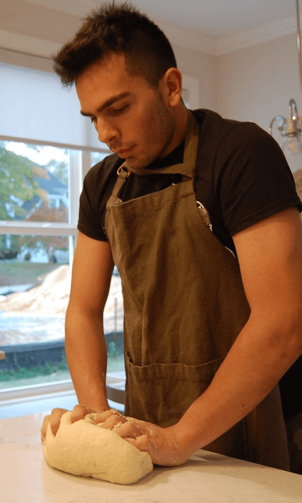

Sobre Nosotros
¡Hola! soy Guille, la mente y el corazón detrás de este espacio culinario. Desde muy pequeña, la cocina ha sido mi pasión, un lugar donde la creatividad se mezcla con los sabores para crear momentos inolvidables.
Este blog nació con la idea de compartir mi amor por la gastronomía, ofreciendo recetas accesibles para todos, desde principiantes hasta chefs experimentados. Creo firmemente que cocinar no tiene por qué ser complicado y que cualquiera puede crear platos deliciosos en su propia casa.
Aquí encontrarás desde postres irresistibles hasta platos salados que te harán lucir. Cada receta está probada y adaptada para asegurar que el éxito esté garantizado. ¡Espero que disfrutes explorando y cocinando tanto como yo disfruto creándolas!